1.参数名
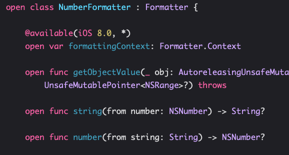
这个from后面还要有冒号
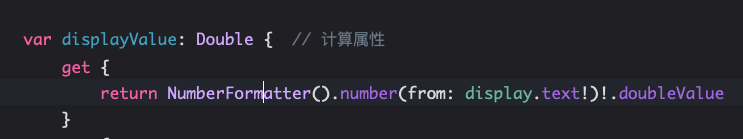
2.static, type method以前的类class方法,现在叫类型type方法
3.can set constant property in init
4.designated initializer must set properties introduced in the calss then call immediate super’s designated initializer
5.failable init?
6.initilizer can inherit
7.AnyObject Casting use “as?” “as!”
8. +=[T]
9.splice(Array,atIndex:Int)
10.String
1 | var s = "hello" |
subString use advance,改了
1 | let num = "56.25" |
11.Type conversion
1 | let d:Double = 37.5 |
12.Assertions
1 | assert(() -> Bool, "message") |
13.Objective-C Compatability
NSString is bridged to String
NSArray -> Array
NSDictionary -> Dictionary
NSNumber -> Int Float Double
1 | let length = (aSring as NSString).length //Casting use "as" |
14.Property List
1 | //collection of |
15.NSUserDefaults
1 | let defaults = UserDefaults.standard |
16.View
1 | init(frame:CGRect) // added via code |
17.Coordinate System Data Stucture
CGFloat
CGSize
CGPoint
CGRect
Origin is upper left
Units are Points, two pixel per point
1 | var contentScaleFator: CGFloat // how many pixels in a point |
center
frame
18.Creating Views
1.storyboard drag and set class to my subclass
2.by code
1 | let view = UIView(frame:myFrame) |
19.Custom Views
1.To draw:
a.create a subclass of UIView
b.override func drawRect(regionThatNeedsToBeRedrawn:CGRect)
c. Call setNeedsDisplay() or setNeedsDispalyInRect(regionThatNeedsToBeRedrawn:CGRect)
d. DO NOT call drawRect, NEVER call it
2.implement drawRect
a.Core Graphic
b.UIBezierPath
1 | let path = UIBezierPath() |
3.draw common shapes
1 | let aCGFloat:CGFloat = 5.0 |
4.Clip
1 | addClip() |
5.Hit detection
1 | func containsPoint(CGPoint:point) -> Bool |
19.UIColor
1 | let transparentYellow = UIColor.yellow().colorWithAlphaComponet(0.5) |
20.Drawing Text
1 | // 20 Drawing Text -> AttributedString |
21.draw images
1 | // 21.drawing Images |
22.Happiness
1.@IBDesignable show in storyboard
2.@IBInspectable can set in storyboard
23.Extensions
1.Only ADD new method
24.Protocol
1 | setValue:forUndefinedKey:]: this class is not key value coding-compliant for the key faceView.' |
1.定义协议
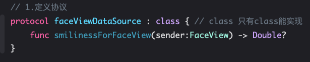
2.添加实现协议的属性
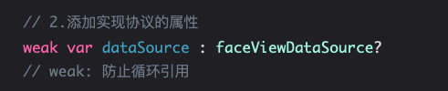
3.使用数据源协议属性
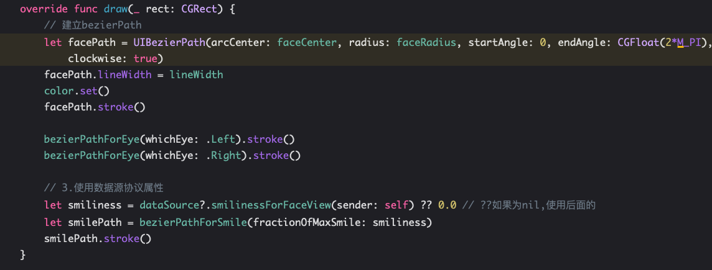
4.宣布遵守协议
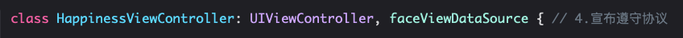
5.实现协议
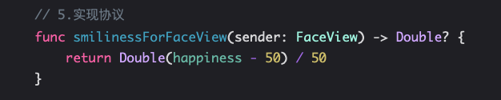
6.设置数据源协议对象
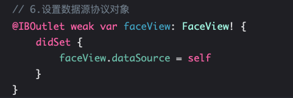
7.刷新显示
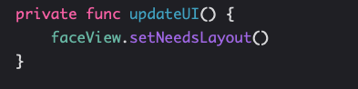
25.Gesture
1 | var scale: CGFloat = 0.9 { |
26.MultiMVC TabBar Navi Split
27.Phycologist
1.auto shrink font size not working
2.bug unkown class in Interface Builder,设置模块好了
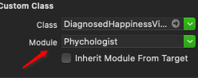
28.View Controller Lifecycle
29.SrcollView
30.Cassini
31.Closure
32.MultiThread
33.UITextView
34.Tableview
1.高度自动计算
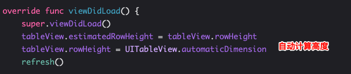
35.final project
36.unwind segue
37.Alert and Action sheet
38.NSTimer
39.View Animation
40.DynamicAnimation
41.Dropit Demo
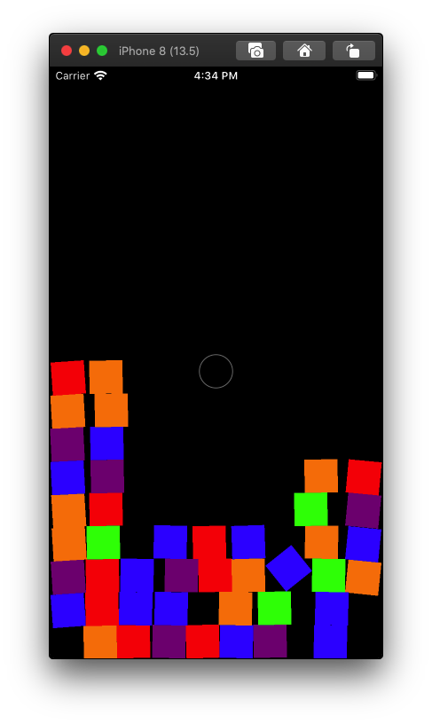